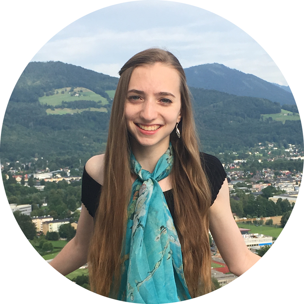

The Boston Symmetry Group organizes events for Boston-area researchers that are interested in the interplay between symmetries and machine learning. Relevant research topics include invariant/equivariant neural networks, symmetries in learning algorithms, graph neural networks, and applications of symmetries in machine learning for physical systems, molecules, social networks, and beyond.
Boston Symmetry Day
Boston Symmetry Day is a meeting of symmetry-minded folks in the Boston area. It is the largest event on symmetry and machine learning in the United States. Registration is free for all who would like to attend, subject to space constraints.
Next Event: Third Boston Symmetry Day on March 31, 2025 at Northeastern University
Our next event is the third Boston Symmetry Day on March 31 at Northeastern University! Register below to attend.
Speakers:
- Jiahui Fu (Robotics and AI Institute).
- Melanie Weber (Harvard).
- Suhas Lohit (Mitsubishi Electric Research Laboratories).
- Kathryn Lindsey (Boston College).
- Jianke Yang (UC San Diego).
- Dian Wang (Northeastern).
Schedule:
9:00-9:30. Breakfast + Registration
9:30-9:40. Opening Remarks
9:40-10:20. Talk 1. Jiahui Fu
Title: NeuSE: Neural SE(3)-Equivariant Embedding for Long-Term Object-based Simultaneous Localization and MappingAbstract: In this talk, we present NeuSE, a novel Neural SE(3)-Equivariant Embedding for objects, and illustrate how it supports object-based Simultaneous Localization and Mapping (SLAM) for consistent spatial understanding with long-term scene changes. NeuSE is a set of latent object embeddings created from partial object observations. It serves as a compact point cloud surrogate for complete object models, encoding the full shape, scale, and transform information about an object. In addition, the inferred latent code is both SE(3) and scale equivariant, enabling strong generalization to objects of both unseen sizes or different SE(3) poses. This makes NeuSE particularly effective in real-world scenarios where objects may vary in size or spatial configuration. With NeuSE, relative frame transforms can be directly derived from inferred latent codes. Our proposed SLAM paradigm, using NeuSE for object shape, size, and pose characterization, can operate independently or in conjunction with typical SLAM systems. It directly infers SE(3) camera pose constraints that are compatible with general SLAM pose graph optimization, while maintaining a lightweight object-centric map that adapts to real-world changes. We conducted evaluation on synthetic and real-world sequences with changes in both controlled and uncontrolled settings, featuring multi-category objects of various shapes and sizes. Our approach demonstrates improved localization capability and change-aware mapping consistency when operating either standalone or jointly with a common SLAM pipeline.
10:20-11:00. Talk 2. Melanie Weber
Title and Abstract TBD11:00-11:20. Coffee
11:20-11:30. Sponsor Talk 1. Liquid AI.
11:30-12:10. Talk 3. Suhas Lohit
Title: Efficiency through equivariance, and efficiency for equivarianceAbstract: In the first part of the talk, I will discuss equivariance in self-supervised learning methods to make learning annotation-efficient. I will describe spatial and temporal equivariance for self-supervised learning for lidar point clouds. Temporal equivariance is achieved by encouraging learning of features that are approximately equivariant to 3D scene flow. By combining this idea with spatial equivariance, we show improved 3D object detection results in autonomous driving datasets.
In the second part, I will describe a general and efficient construction for equivariant neural networks, called Group Representation Networks (G-RepsNets). The architecture is based on using appropriate input representations and learning simple tensor polynomials that preserve equivariance for a chosen group. G-RepsNets are expressive networks that are applicable to a wide range of problems without needing task-specific complicated designs, and perform comparably with existing equivariant architectures while being computationally more efficient. G-RepsNets are also universal approximators of equivariant functions for orthogonal groups.
12:10-13:30. Lunch (provided at Northeastern)
13:30-13:40. Sponsor Talk 2. Achira.
13:40-14:20. Talk 4. Kathryn Lindsey
Title: Implications of Symmetry Inhomogeneity for ReLU Neural NetworksAbstract: Parameterized function classes in machine learning are often highly redundant, meaning different parameter settings can represent the same function. For feedforward ReLU neural networks, the dimension of the local symmetry space varies significantly across parameter space. How does this inhomogeneity influence training dynamics and generalization? We will present both empirical and theoretical results that shed light on these effects.
14:20-15:20. Coffee + Poster Session
15:20-15:30. Sponsor Talk 3. TILOS.
15:30-16:10. Talk 5. Jianke Yang
Title: Automatic Discovery of Symmetries and Governing EquationsAbstract: Equivariant methods require explicit knowledge of the symmetry group. To relax this constraint, we present a framework, LieGAN, to automatically discover invariance and equivariance from a dataset using a paradigm akin to generative adversarial training. Specifically, a symmetry generator learns a group of transformations applied to the data, which preserve the original distribution and fool the discriminator. This method can also be extended to discovery nonlinear symmetry transformations by introducing an autoencoder to learn a latent space where the group action is linearized. Our method can discover various symmetries such as the restricted Lorentz group $\mathrm{SO}(1,3)^+$ in top quark tagging and the nonlinear symmetries in various dynamical systems. Furthermore, we demonstrate how the learned symmetries can be used inductive biases to improve equation discovery algorithms in dynamical systems.
16:10-16:50. Talk 6. Dian Wang
Title: Equivariant Policy Learning for Robotic ManipulationAbstract: Despite the recent advances in machine learning methods for robotics, existing learning-based approaches often lack sample efficiency, posing a significant challenge due to the enormous time required to collect real-robot data. In this talk, I will present our innovative methods that tackle this challenge by leveraging the inherent symmetries in the physical environment. Specifically, I will outline a comprehensive framework of equivariant policy learning and its application across various robotic problem settings. Our methods significantly outperform state-of-the-art baselines while achieving these results with far less data, both in simulation and the real world. Furthermore, our approach demonstrates robustness in the presence of symmetry distortions, such as variations in camera angles.
16:50-17:00. Closing Remarks
Past Events:
Fall 2024: Social and Poster Session at MIT
Fall 2023: Boston Symmetry Day at MIT
Spring 2023: Boston Symmetry Day at Northeastern University
Mailing List
Beyond information about Boston Symmetry Day, the mailing list also announces events like relevant seminars or talks. It may further be used for relevant discussions and job opportunities.
The mailing list can be found here.
Organizers

|

|

|

|

|
|
Sponsors
We are looking for additional sponsors to help fund Boston Symmetry Day. Please contact us if you are interested. Below are sponsor tiers and benefits:
Bronze Tier: $500
- Can advertise 1 job description to attendees
- CVs of attendees who wish to share
- Logo on website
Silver Tier: $1000
- Can advertise 3 job descriptions to attendees
- CVs of attendees who wish to share
- Opportunity to give a 5 minute presentation
- Logo on website
Gold Tier: $2000
- Can advertise 5 job descriptions to attendees
- CVs of attendees who wish to share
- Opportunity to give a 10 minute presentation
- Logo on website
We are also open to sponsorships at different monetary amounts and different benefits. Please contact us if you would like to discuss.
Social Media

|
Follow us on Twitter @bostonsymmetry for more updates. |
Sponsors
|
|
|
|
|
|
|
|
Past Sponsors (2nd Boston Symmetry Day)
|
|
|
|
|
|
|
|
|
|